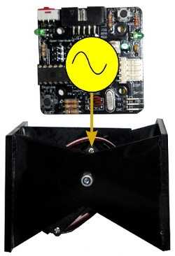

Hemos liberado la versión 0.3 de los micro-osciladores. Es el software que se ejecuta en un pic16f876a y que controla la oscilación de hasta 8 servos futaba 3003 o compatibles. Con estas oscilaciones se logra que los robots modulares con topología de una dimensión puedan desplazarse.
Las mejoras con respecto a la versión anterior son:
* Optimización del código
* Periodo de muestreo fijado a 20ms, que es lo mínimo posible para servos Futaba
* Mejorado el funcionamiento: las oscilaciones ya no dependen del número de servos funcionando
* Adaptación a la tarjeta Skycube
* Ejemplos de movimiento de los robots
Cube Revolutions,
Hypercube y
Minicube-II.
* Control de los osciladores desde el PC
Los osciladores pueden funcionar de manera autónoma o bien controlados desde el PC. Esto es muy útil para aprender su funcionamiento y ver cómo afectan los diferentes parámetros a la locomoción de los robots (esto lo usaremos en los talleres de robots modulares).
Hemos desarrollado un programa en python que se comunica con el servidor de oscilaciones. Es muy útil porque se puede usar el modo interactivo del interprete de python para hacer pruebas, como se muestra en el vídeo:

Este es el script python con los comandos usados en el vídeo:
import libStargate.Oscillator
o=libStargate.Oscillator.Open_session("/dev/ttyUSB0")
#-- Activar los osciladores 1, 2 y 3
o.on(1)
o.on(2)
o.on(3)
#-- Parar oscilador 2
o.off(2)
#-- Llevar servo 2 a 45 grados
o.pos(2,45)
#-- Llevar servo 2 a -45 grados
o.pos(2,-45)
#-- Deshabilitar servo 2
o.disable(2)
#-- Deshabilitar resto de servos
o.disable(1)
o.disable(3)
En las próximas versiones se completará la interfaz para establecer los parámetros de oscilación: velocidad, amplitud, fase y offset.